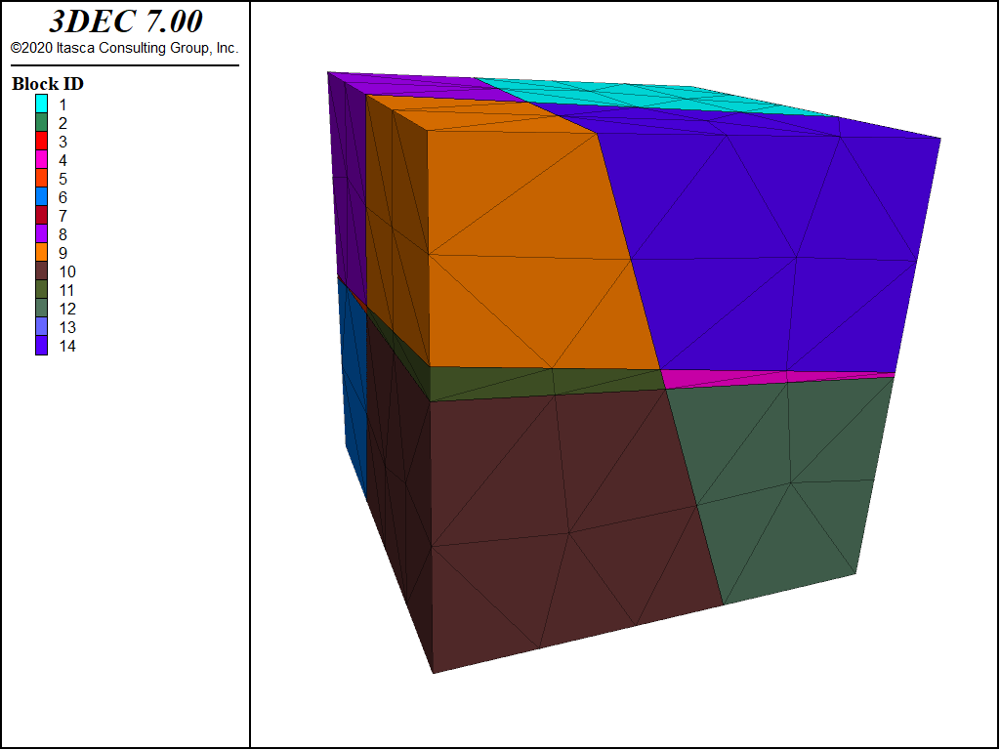
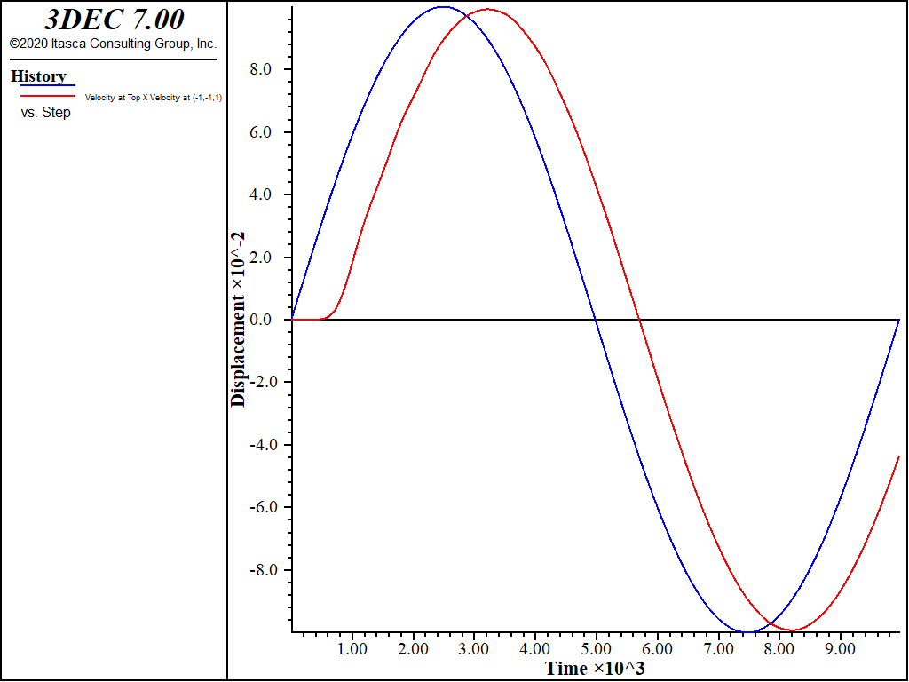

动力分析中的部分密度缩放
密度缩放是 3DEC 在准静力计算中采用的一种技术，可大幅提高求解大型问题的效率。在准静力问题中，惯性力并不重要。可为获得最优的数值收敛而对网格点质量进行缩放，而不影响解答。然而在动力分析中，不能采用整体缩放。复杂的节理体系在自动划分网格过程中常常产生非常小的块体和/或网格单元。这些小尺寸块体/网格单元为使显式算法数值稳定，需要非常小的时步，从而使某些动力求解极为耗时。不过，由于这些块体/网格单元可能非常小、质量也非常小，因而可以仅对这些块体/网格单元引入一定的密度缩放，使系统惯性的变化可忽略不计。这种部分密度缩放方案在 3DEC 中的实现方式是：由用户控制所要引入的缩放量。程序先算出时步，用户再用命令 block mechanical mass-scale dt 指定所需的时步。该命令规定，只对体系施加达到时步 dt 所需的密度缩放量。给出 model cycle 命令时，程序会打印一条消息，说明被缩放的网格点质量数目以及所增加的质量量值。
部分密度缩放的示例
图 1（Figure 1） 显示了一个含若干薄块体的简单块体系统。未作任何缩放时动力分析所需的时步为 1.005e-6 秒。采用部分密度缩放后，时步可增大到 5e-6 秒，而系统总质量仅增加 5%。
使用 block mechanical mass-scale 命令后，3DEC 会打印该信息：
no. scaled g.p. masses = 68
min. g.p. scaling factor = 4.038E-02
max. g.p. scaling factor = 1.000E+00
min. g.p. added mass = 0.000E+00
max. g.p. added mass = 3.103E-05
min. block added mass = 0.000E+00
max. block added mass = 1.938E-04
total added mass in model = 8.202E-04
total real mass in model = 1.920E-02
added mass / real mass = 4.272E-02


图 1：含小块体和薄块体的模型视图。
通过比较体系对施加于模型底部的正弦剪切的响应，检验了这一部分密度缩放量的效果。模型顶部施加黏性边界条件以模拟延展的介质。图 2（Figure 2） 给出了未作缩放的计算中施加于底部的 \(x\) 向速度以及模型顶部得到的速度。图 3（Figure 3） 给出了采用部分密度缩放（时步约大 5 倍）的计算中的相同量。可以看出，波传播并未受到所引入的少量缩放的影响。


图 2：未作任何密度缩放的分析中模型底部和顶部的速度。

数据文件 - 不缩放
;-----------------------------------------------------------------------
; 动力分析，不进行密度缩放
;-----------------------------------------------------------------------
model new
model title "Dynamic Analysis - no density scaling"
model config dynamic
model large-strain on
;几何形状
block create brick -1,1 -1,1 -1,1
block cut joint-set dip 5 dip-direction 45 origin 0 0 0
block cut joint-set dip 10 dip-direction 40 origin 0 0 0
block cut joint-set dip 70 dip-direction 95
block cut joint-set dip 80 dip-direction 10
; 网格单元
block zone generate edgelength 0.5
block zone cmodel assign el
block zone prop dens 0.0024 bulk 33333 shear 20000
; 节理
block contact jmodel assign el
block contact prop stiffness-normal 500000 stiffness-shear 500000
block contact material-table default prop stiffness-normal 500000 ...
stiffness-shear 500000
; 力学分析中默认关闭
;block mechanical mass-scale off
[freq = 100.0]
fish def sin_
sin_ = math.sin(2.0*math.pi*mech.time*freq)
end
; 边界条件
block gridpoint apply visc range pos-z 1
block gridpoint apply vel-x 0.1 fish sin_ range pos-z -1
block gridpoint apply vel-y 0 vel-z 0 range pos-z -1
block gridpoint apply vel-y 0 vel-z 0 range pos-x -1
block gridpoint apply vel-y 0 vel-z 0 range pos-x 1
block gridpoint apply vel-y 0 vel-z 0 range pos-y -1
block gridpoint apply vel-y 0 vel-z 0 range pos-y 1
; 历史
model his mech unbalanced-max
block his name 'Velocity at Bottom' vel-x pos -1 -1 -1
block his name 'Velocity at Top' vel-x pos -1 -1 1
model his name 'Time' dynamic time-total
model solve time-total 0.01
model save "zp2no"
数据文件 - 部分缩放
;-----------------------------------------------------------------------
; 动力分析，不进行密度缩放
;-----------------------------------------------------------------------
model new
model random 10000
model title "Dynamic Analysis - no density scaling"
model config dynamic
model large-strain on
;几何形状
block create brick -1,1 -1,1 -1,1
block cut joint-set dip 5 dip-direction 45 origin 0 0 0
block cut joint-set dip 10 dip-direction 40 origin 0 0 0
block cut joint-set dip 70 dip-direction 95
block cut joint-set dip 80 dip-direction 10
; 网格单元
block zone generate edgelength 0.5
block zone cmodel assign el
block zone prop dens 0.0024 bulk 33333 shear 20000
; 节理
block contact jmodel assign el
block contact prop stiffness-normal 500000 stiffness-shear 500000
block contact material-table default prop stiffness-normal 500000 ...
stiffness-shear 500000
; 部分缩放，最大时间步长为 5e-6
block mechanical mass-scale timestep 5e-6
[freq = 100.0]
fish def sin_
sin_ = math.sin(2.0*math.pi*mech.time*freq)
end
; 边界条件
block gridpoint apply visc range pos-z 1
block gridpoint apply vel-x 0.1 fish sin_ range pos-z -1
block gridpoint apply vel-y 0 vel-z 0 range pos-z -1
block gridpoint apply vel-y 0 vel-z 0 range pos-x -1
block gridpoint apply vel-y 0 vel-z 0 range pos-x 1
block gridpoint apply vel-y 0 vel-z 0 range pos-y -1
block gridpoint apply vel-y 0 vel-z 0 range pos-y 1
; 历史
model his mech unbalanced-max
block his name 'Velocity at Bottom' vel-x pos -1 -1 -1
block his name 'Velocity at Top' vel-x pos -1 -1 1
model his name 'Time' dynamic time-total
model solve time-total 0.01
model save "zp2part"
| 这些内容对您有帮助吗？… | FLAC3D © 2019, Itasca | 原文更新于 2020 年 10 月 8 日 |